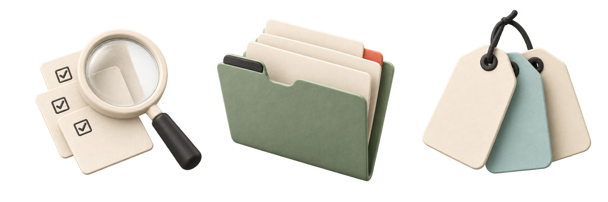

Search
Tasks, projects and labels.


Projects
Keep tasks grouped by goal.
Search
Find tasks and projects.
Labels
Group related tasks across projects.
Tasks, projects and labels.

Keep tasks grouped by goal.
Find tasks and projects.
Group related tasks across projects.